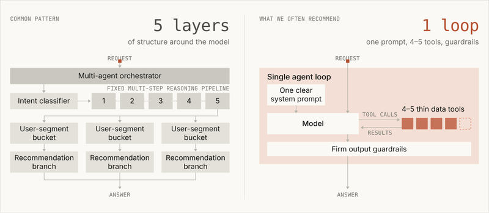
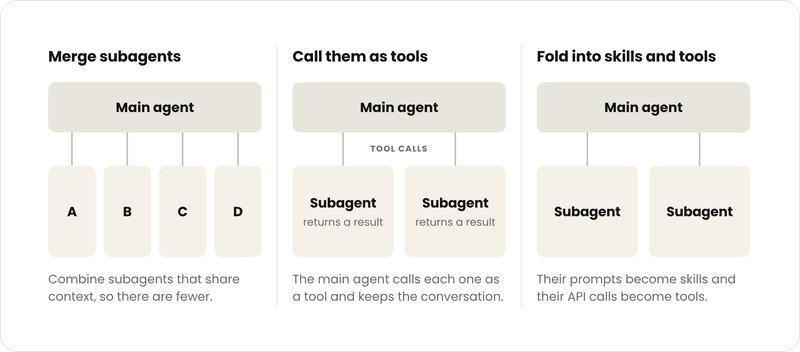

Feature 05 · ARTICLE · 2026 10
Building agents: When to fold subagents into your main agent loop
Subagents are good at verification, parallel work, and modular permissioning, and we use them in our own agents. But across several enterprise deployments, a single agent with skills frequently outperformed both the one-prompt-for-everything design and the subagent design on quality, and often at a lower cost and latency per task. Keep a subagent when a single loop hits measurable degradation from context bloat, when parallel tasks need fresh context windows you can discard afterwards, or when one agent struggles to pick tools or faces conflicting instructions in its system prompt. Otherwise, build a small end-to-end eval, fold in one subagent, and keep it as a subagent only if the folded version scores worse.
How large organizations go wrong
Each team builds its own agent, and a central platform team puts an orchestrator on top. The architecture becomes a copy of the org chart. This brings:
Lost context: details drop out in the back and forth between agents.
Subagent sprawl: hundreds of overlapping subagents, no enforced standards, no specific owner.
The Frankenprompt: every team adds a sentence, leaving conflicting rules and no consistent voice.
Localized evals: each team optimizes for its subtask, no one maintains the whole set, and leadership decides on watered-down scores.
Latency: one customer that compared its multi-agent harness with a single agent loop saw a roughly 2x faster runtime with the latter.
One company found that the dozen specialist subagents in its customer-facing agent made a consistent on-brand experience difficult to maintain and added latency that hurt the user experience.
Why one loop

The alternative is progressive disclosure: the agent sees short descriptions of skills and tools, and loads them in full only when needed. Three reasons this can make sense:
Shared context produces better answers. An agent that has seen each earlier step can connect them, which leads to richer outputs than summaries handed back by subagents.
Progressive disclosure prevents context bloat, which removes the main reason teams split work across subagents. We reduced Claude Code’s system prompt for more advanced models by over 80%, partly through these cuts.
Models are more capable. Starting with Opus 4.5, models could manage far more in one loop than most teams expected. Recent models narrate their progress and check their work, which makes some harness elements redundant. In migrations we’ve helped with, rigid multi-agent structures were often what stopped the new model from doing more of the work.
The design requires discipline: a carefully managed system prompt, skill and tool descriptions that trigger at the right times, and deliberate handling of context, memory, and note-taking. One small central team should own the system prompt and end-to-end quality, vetting every new tool and eval.
If you do go multi-agent, start with the simplest pattern that could work, and divide by context: give each subagent work that needs little from the rest of the system and have it hand back a compact result. Agents split by problem type play a telephone game, losing fidelity with each handoff.
The target design
One model and one context window run an open-ended tool loop, with turn and cost budgets and write gates set in the harness.
Each turn, the model emits a batch of tool calls; the harness runs them in parallel and returns raw results to the same model, which decides the next step.
The loop stops when the model answers or hits a budget. A verifier can optionally run after.
The model writes its plan on the first turn and revises it as results arrive. This is the main change: the model that writes the plan also carries it out.
Ordering and domain procedure move into skills. Hard limits and mid-conversation needs, such as memory lookup, move into tools. Code still loads anything cheap and almost always relevant, and handles mechanical parts inside tools.
Getting there

Evals first. One shared end-to-end set owned by the central team, plus smaller sets shipped with each skill. Even 10 golden examples is enough to start. Grade the final message against a rubric. While you have an orchestrator, track routing accuracy; once a subagent is folded in, check whether the agent loaded the right skill or called the right tool. Work toward task-completion evals, since they matter most when comparing architectures. Where systems are hard to replay, record timestamps on important events so they can be replayed later.
Merge domain agents that chain on each other’s output, touch the same data, or are often called together, starting with the most used.
Call kept subagents as tools, so the main agent holds the conversation. We’d only recommend a full handoff when the subagent needs to talk to the user directly. This needs no rewrite and gives you a baseline, but each specialist still has its own prompt, owner, and evals, still hands back a lossy summary, and still adds a nested model loop’s latency.
Fold subagents in one at a time, turning prompts into skills and API calls into MCP tools, and compare evals with and without each. Look at which tasks flipped, not just the score. On a sample support agent, folding one subagent into another lowered latency but broke a process that had been passing: the main agent held the order lookup tool and answered alone, without asking the shipping specialist for the delivery date. Your eval needs a task for every chain that runs together in production and every rule the agent must not break, and each task should run more than once. That break showed up in one run out of two.
How several teams contribute
Teams shift from owning agents to owning skills and tools.
Tools fit actions, live data, and results in a fixed shape. Group them by user intent, not one per API: past 30-50 tool definitions, tool choice tends to degrade. Use tool search with deferred loading. Put preconditions in the tools: if Y needs X’s output, Y’s tool checks and returns an instruction the model can act on. Permissions work the same way, with a plain refusal the model can read, so one loop serves users with different access.
Skills fit how a team does work: the steps, rules, and judgment calls a specialist’s prompt used to hold. A DRI per team owns them. /skill-creator authors and audits skills; /skill-doctor shows what each costs and how often it’s used, so you can delete dead weight.
Knowledge bases fit reference material the agent needs only some of the time, behind a lookup tool or inside a skill. Avoid having code paste this context into prompts.
Our migration kit chains four Claude API skills into one guided workflow, with a demo to try first: build-eval creates the eval sets, prompt-audit flags instructions written for older models, hillclimb iterates against an eval for the folded-versus-kept comparison, and cost-optimize proposes savings one change at a time.
Any one architecture matters less than the principle behind it: measure, change one thing at a time, and keep what holds up. You don’t have to move in one step. Fold in one subagent, compare, and repeat.